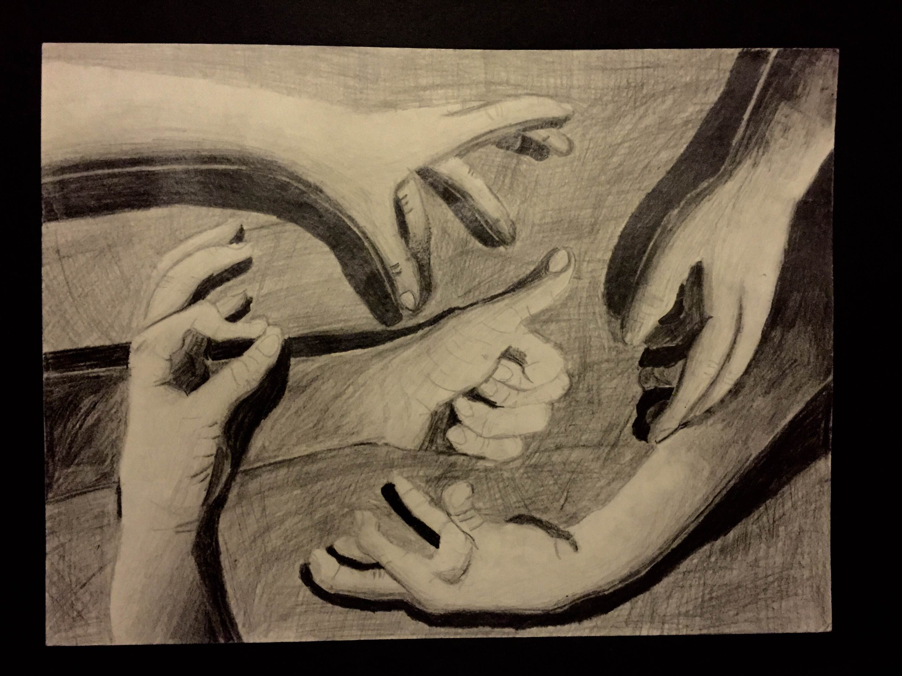

Feel Free to Contact Me! I usually respond with 24 hours.
You can email me at: calderonkevin108@gmail.com
psttt... connnect with me on linkedin!
Currently working on developing a website for Chéve, and open to any other projects that may come my way.
Languages I code in: Javascript, Python, Ruby, C++, Java, PHP
Libraries and Tools I've Used: JQuery, Firebase, Bootstrap, JSmol, Jmol, Jasmine.js, React, React Native, Sinatra, Ruby on Rails
Chéve is a brand of chokers and accessories that features african prints and pendants, tapping into a market and culture previously underrepresented. I have been working on their website for their online launch.
Built With: CSS, HTML5, JS, JQuery, Bootstrap
A website that caters towards GEN Z: current high school and college aged people, and gives them a space to share their opinions on curren events, politics, fashion, art, etc. It's a place where they can voice their opinions, no matter what it may be. This was my final project for All Star Code during the summer of 2016.
Built With: CSS, HTML5, JS, JQuery, Firebase
I'm a current high school senior living in NYC, who enjoys strolling through art museums and iced black coffee (yes, even in the winter). I will be attending Stanford University this fall.
I'm a creator at heart, and I love anything and everything that has to do with creation, from art to film to fashion, and most especially coding and the tech industry. I have a deep passion for media and communications, and how we use technology to innovate those connections.
I may be young, but I do enjoy a challenge, and always find a way to get the job done ;)
Check out my resume!
I will be attending Stanford University this fall (Class of 2022). Let's go Cardinal!
I am a current high school senior in Queens with a GPA of 101.38
Over the summer of 2017, I did an online research program called Pioneer Academics. I studied under Professor Miriam Rossi of Vassar College, and published a paper that used data attained x-ray crystallography to find the connection between molecular structures of insecticides and their interactions with the protein receptors in insects. You can read it here
I'm also a visual artist! Check out my work from the past few years!
